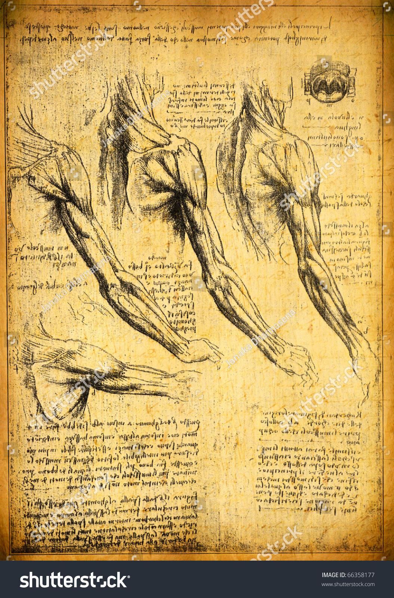

การศึกษาด้านกายวิภาคศาสตร์

การผ่าตัดศึกษา: ชำแหละร่างมนุษย์และสัตว์มากกว่า 30 ร่าง เพื่อศึกษาโครงสร้างกระดูก กล้ามเนื้อ เส้นเลือด และการทำงานของหัวใจอย่างละเอียด Vitruvian Man: ภาพวาดลายเส้นสัดส่วนมนุษย์ตามทฤษฎีของวิทรูเวียส สถาปนิกโรมัน แสดงความสัมพันธ์ระหว่างสัดส่วนร่างกายมนุษย์กับรูปทรงเรขาคณิต (วงกลมและสี่เหลี่ยม) คุณค่าต่อแพทย์: บันทึกการทำงานของลิ้นหัวใจและพัฒนาการของทารกในครรภ์อย่างแม่นยำ ซึ่งเป็นรากฐานให้กับภาพภาพประกอบทางการแพทย์ในยุคต่อมา